| Category | Description | Notation |
|---|---|---|
| Data | IMDB ratings | \(D\) |
| Calculation | Average action rating − average comedy rating | \(\bar{D} = \frac{\sum{D}_\text{Action}}{N} - \frac{\sum{D}_\text{Comedy}}{N}\) |
| Estimate | \(\bar{D}\) in a sample of movies | \(\hat{\delta}\) |
| Truth | Difference in rating for all movies | \(\delta\) |
Statistical Inference
Overview
Population vs. Sample
Inventing Null Worlds
The Central Limit theorem
Theoretical Distributions
Population vs. Sample
Why do we do statistics ?
To make inferences about a population based on observing only a sample
Are action movies better than comedies?
Data → Calculation → Estimate → Truth
Greek, Latin, and extra markings
Greek
Letters like \(\delta\) are the truth
Letters with extra markings like \(\hat{\delta}\) are our estimate of the truth based on our sample
Latin
Letters like \(D\) are actual data from our sample
Letters with extra markings like \(\bar{D}\) are calculations from our sample
Your turn #1: Calculating an estimate
Collect IMDB ratings for a bunch of films via the ggplot2movies package.
Install the package (use either console or the Rstudio interface. Do not use a Script)
Load the package in your script.
Load the movies data (type:
data("movies"))Make a new cleaned data frame by
- selecting only the
title,year,rating,ActionandComedycolumns - filtering out films that classify as both Action and Comedy
- making a new variable
genre(usingmutate()andcase_when()) which takes the values “Action” or “Comedy” - removing the now obsolete
ActionandComedycolumns (useselectand-)
- Calculate the average ratings for the two genres
08:00
Your turn #1: Calculating an estimate
- Install the package (use either console or the Rstudio interface. Do not use a Script)
Use install.packages("ggplot2movies") in your console.
- Load the package in your script.
Use library(ggplot2movies) in your script.
- Load the movies data (type:
data("movies"))
Your turn #1: Calculating an estimate
- Make a new cleaned data (
movie_data) frame by
- selecting only the
title,year,rating,ActionandComedycolumns - filtering out films that classify as both Action and Comedy
- making a new variable
genre(usingmutate()andcase_when()) which takes the values “Action” or “Comedy” - removing the now obsolete
ActionandComedycolumns (useselectand-)
# Clean up data
movie_data <- movies |>
select(title, year, rating, Action, Comedy) |>
filter(!(Action == 1 & Comedy == 1)) |>
mutate(genre = case_when(Action == 1 ~ "Action",
Comedy == 1 ~ "Comedy",
TRUE ~ "Neither")) |>
filter(genre != "Neither") |>
# Make genre a factor (not necessary at this point)
mutate(genre = factor(genre)) |>
select(-Action, -Comedy)Your turn #1: Calculating an estimate
- Calculate the average ratings for the two genres
So, are action movies better than comedies?
# A tibble: 2 × 2
genre avg_rating
<fct> <dbl>
1 Action 5.24
2 Comedy 5.97\[ \hat{\delta} = \bar{D} = 5.24 - 5.97 = -0.73 \]
Action movies seem to be slightly worse. But…
We don’t know if the estimate we found in this sample is actually true for the population of all films
Inventing Null Worlds
Simulated Null World
- Let’s try to imagine a world with no differences between action and comedy movies
- We simulate data with ratings for 1’000’000 movies where there is no difference (the true \(\delta\) is 0). Imagine that’s the population, i.e. all movies ever made.
Simulated Null World
Our simulated action movies and comedies don’t all have the same rating, but on average there’s (almost) no difference
Sampling & Estimating in the Null world
In the actual IMDB data, we looked at a sample of about 20’000 films.
We can randomly pick a sample of that same size from our simulated population
In this sample, we actually find a small difference
Let’s repeat this process of sampling and estimating 1000 times, and store the results.
n_simulations <- 1000
differences <- c() # make an empty vector
for (i in 1:n_simulations) {
# draw a sample of 20'000 films
imaginary_sample <- imaginary_movies |>
sample_n(20000)
# compute rating difference in the sample
estimate <- imaginary_sample |>
group_by(genre) |>
summarize(avg_rating = mean(rating)) |>
summarise(diff = avg_rating[genre == "Action"] - avg_rating[genre == "Comedy"]) %>%
pull(diff)
differences[i] <- estimate
}We can plot the results for an overview
n_simulations <- 1000
differences <- c() # make an empty vector
for (i in 1:n_simulations) {
# draw a sample of 20'000 films
imaginary_sample <- imaginary_movies |>
sample_n(20000)
# compute rating difference in the sample
estimate <- imaginary_sample |>
group_by(genre) |>
summarize(avg_rating = mean(rating)) |>
summarise(diff = avg_rating[genre == "Action"] - avg_rating[genre == "Comedy"]) %>%
pull(diff)
differences[i] <- estimate
}Check \(\hat{\delta}\) in the null world
Does the estimate we found in the IMDB data (\(\hat{\delta}\) = -0.73) fit well into the world where the true difference \(\delta\) is 0?
Check \(\hat{\delta}\) in the null world
Does the estimate we found in the IMDB data (\(\hat{\delta}\) = -0.73) fit well into the world where the true difference \(\delta\) is 0? Not really.

So, again, are action movies better than comedies?
We can now pretty confidently say that in a world where there is no difference, observing what we observed is super unlikely.
Therefore, we’re pretty confident that in fact there is a difference.
(We still don’t know what the true difference is, but at least we can say it’s unlikely to be 0)
🎉 Congratulations, if you got that, you got the whole intuition behind hypothesis testing.
All this is good, but how (un)likely exactly is it to observe our \(\hat{\delta}\) in the null world?
That is where the central limit theorem and theoretical distributions come into play…
The central limit theorem
You have seen before the estimated mean differences of our imaginary samples (the \(\hat{\delta}s\)), somehow magically, form a curve that is…
- bell-shaped
- centered around the true value (\(\delta\)), which in our case was 0.
This distribution of estimates is also called the sampling distribution.
The central limit theorem states that, with many observations, the sampling distribution approximates a normal distribution.
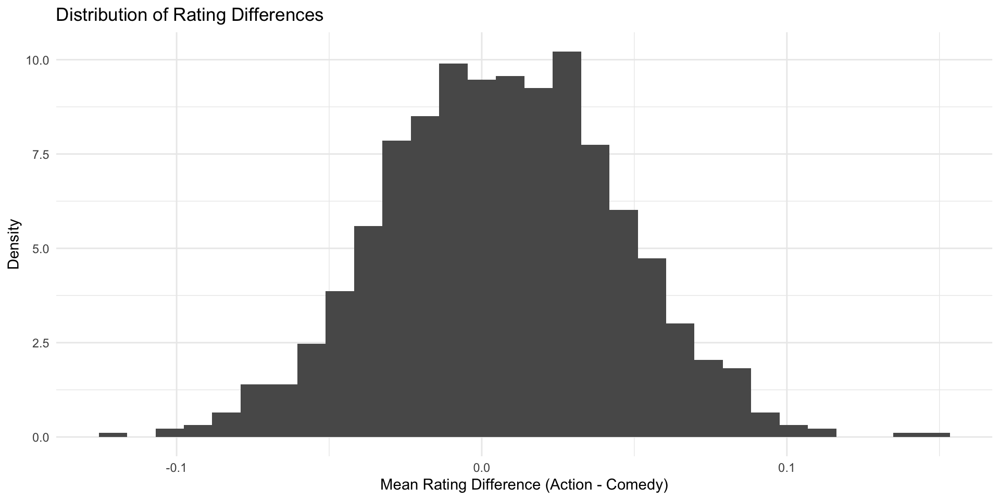
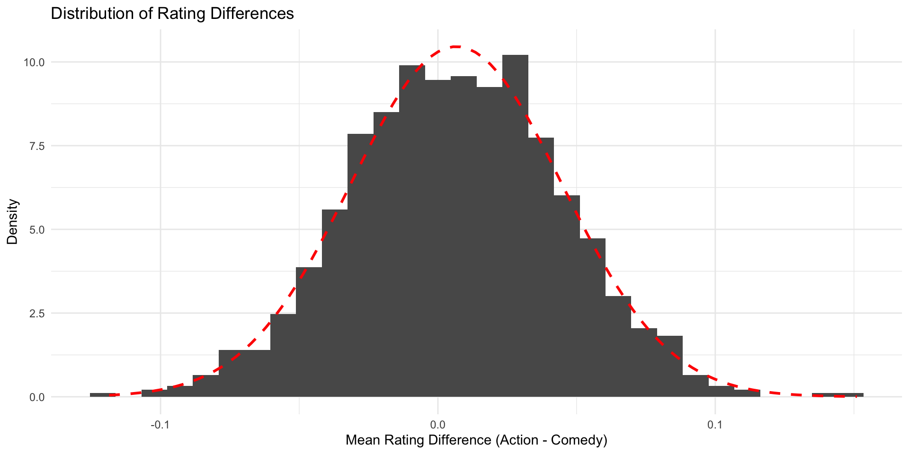
Theoretical distributions
Quick recap
Remember our problem: We were not sure how (un)likely exactly our observation was in the Null world
Thanks to the central limit theorem, we know that sampling distributions approximate theoretical distributions.
And for theoretical distributions, thanks to math, we know exactly how likely a certain value is 🎉
The most famous bell-shaped distribution is the (standard) normal distribution.
The standard normal distribution is centered around 0 and has a standard deviation of 1.
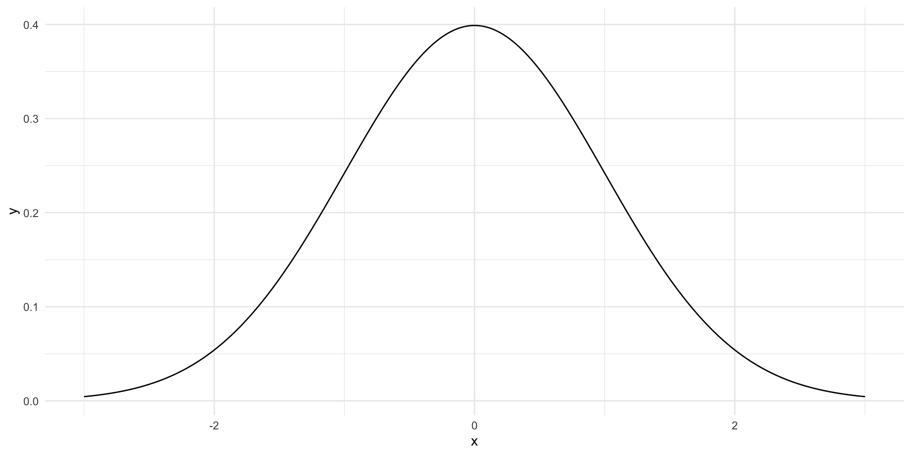
We know, e.g., that 99% of the distribution lie between \(\pm\) 2.58
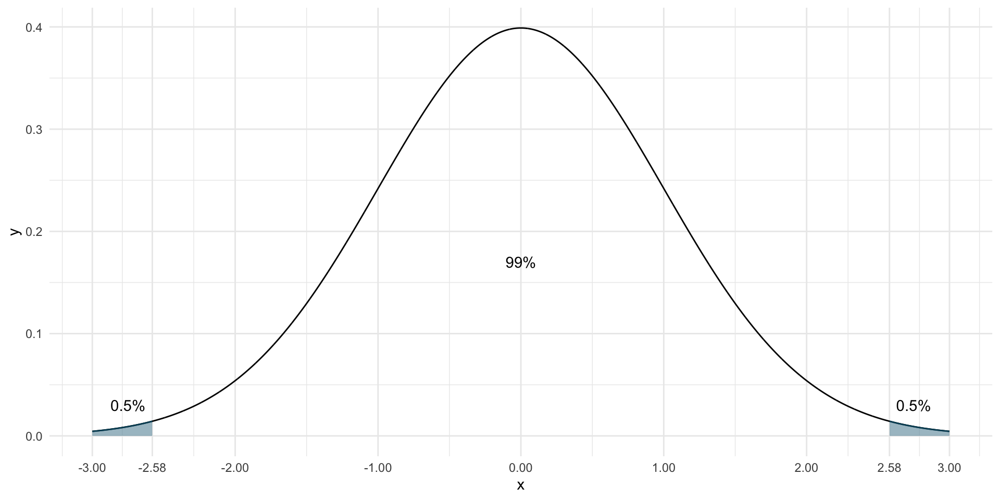
Or that 95% of the distribution lie between \(\pm\) 1.96
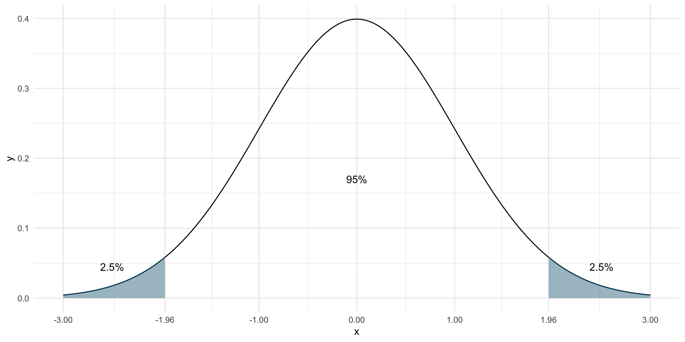
Now, all we need to do is bring our sampling distribution on the scale of a standard normal distribution.
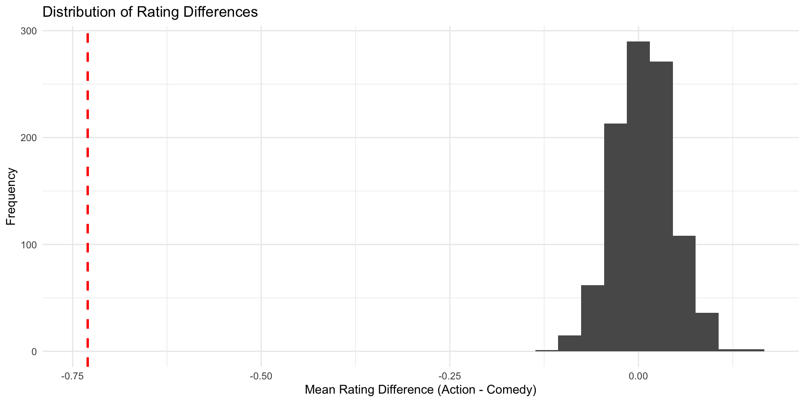
Now, all we need to do is bring our sampling distribution on the scale of a standard normal distribution.
We achieve this by
- Subtracting the mean from all values (in our case, that is 0, so nothing happens)
In our case, that is (almost) 0, so not much happens
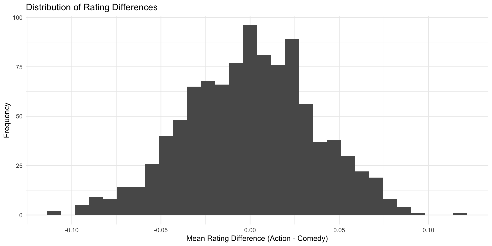
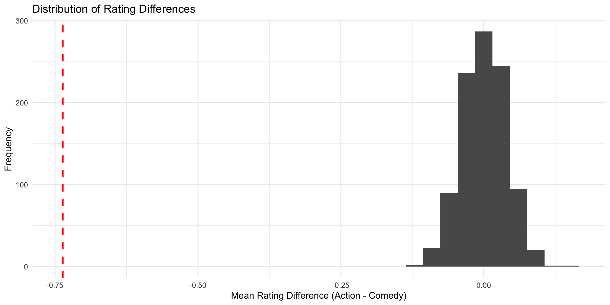
Now, all we need to do is bring our sampling distribution on the scale of a standard normal distribution.
We achieve this by
Subtracting the mean from all values
Dividing by the standard deviation
Since the sd is small than 1, our values become bigger

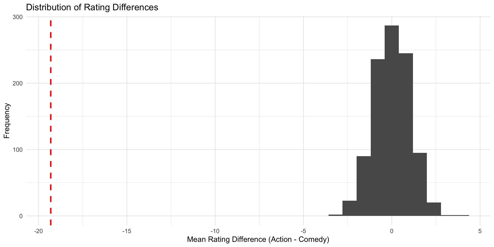
Instead of a histogram, we can use a density plot (which uses the same y-axis as the normal distribution, namely density)
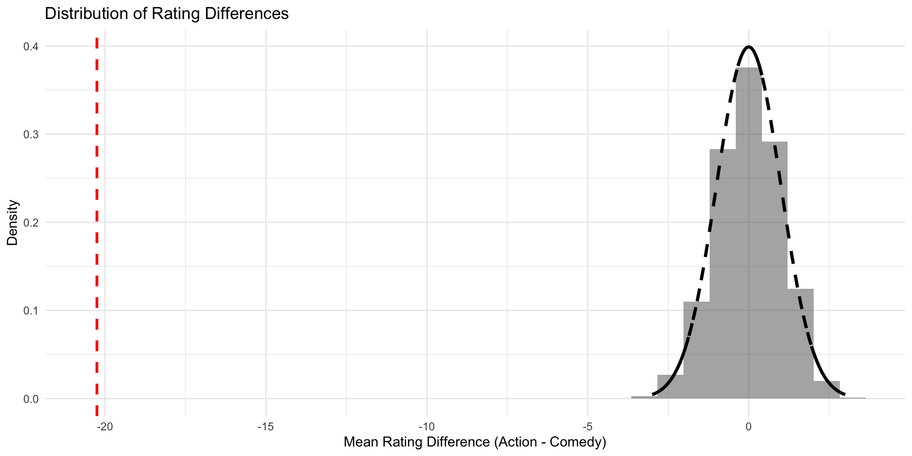
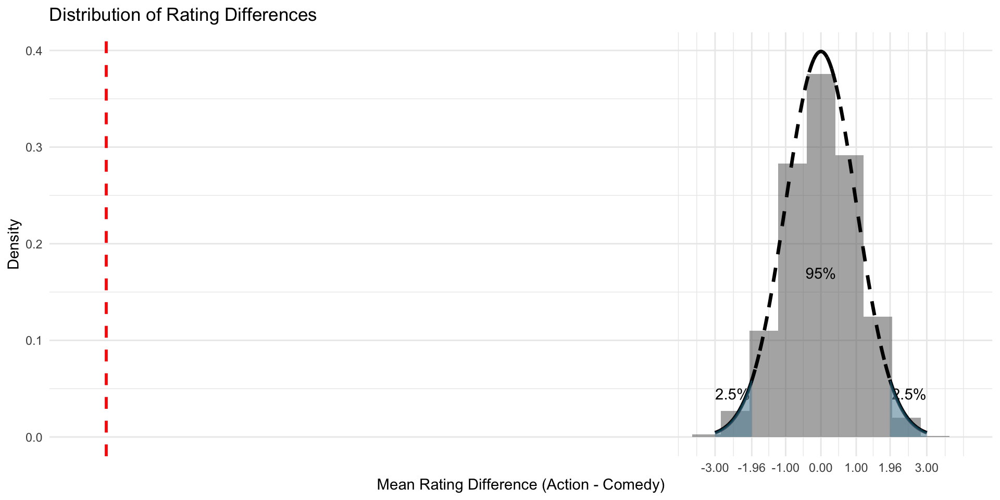
Finally, we can lay over the standard normal distribution
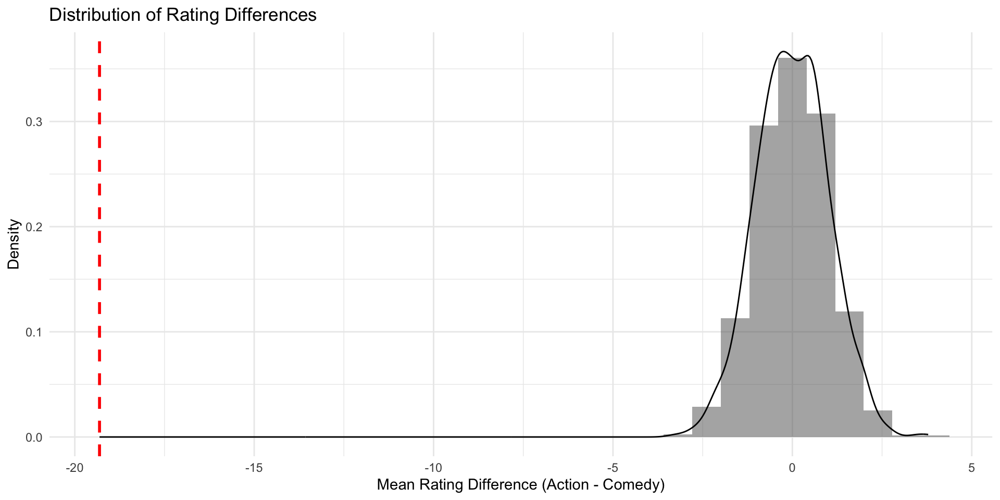
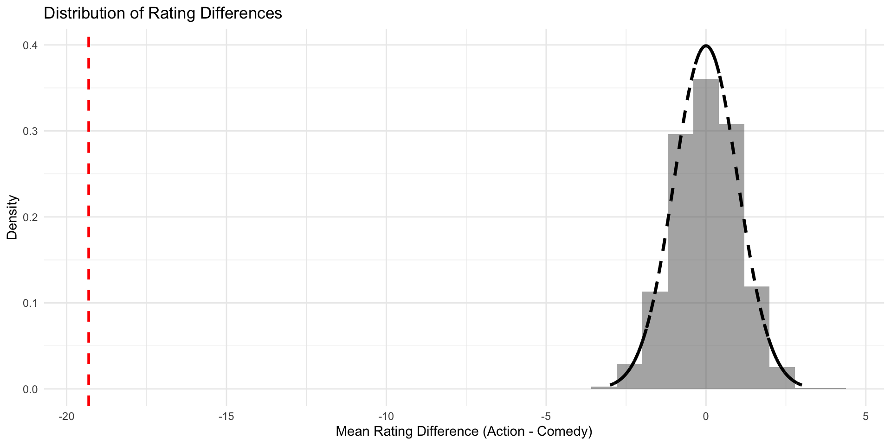
Now we can say for sure that in our Null world, chances that we get an estimate as extreme as the one in our IMBD data is less than 5%
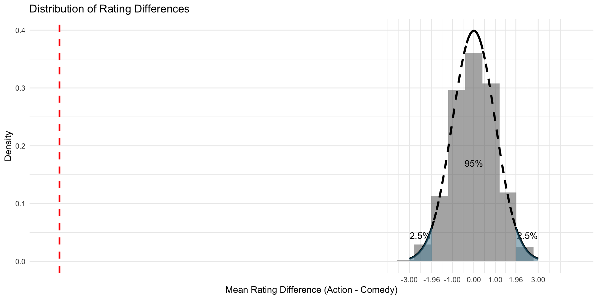
You can even calculate the exact probability of observing the estimate in a null world…
- Bring your estimate on a scale of the standard normal distribution (that is also called a z-value)
Note
You don’t need to do a simulation of your sampling distribution all the time. In general, we obtain the standard deviation of the (imaginary) sampling distribution with math. This standard deviation is so important that it has its own name: the Standard Error (SE)
You can even calculate the exact probability of observing the estimate in a null world…
- Bring your estimate on a scale of the standard normal distribution (that is also called a z-value)
estimate <- 0.73
sd_sampling_distribution <- sd(differences)
z_scaled_estimate = estimate / sd_sampling_distribution
z_scaled_estimate[1] 19.13716- Look up the corresponding probability (luckily, in R that’s very easy)
# the pnorm() function gives the cumulative probability from the standard normal distribution
# Two-tailed (i.e. a value "at least as extreme as", in both directions)
probability <- 2 * (1 - pnorm(z_scaled_estimate))
# in our case, the probability is reeaally low (practically 0)
probability[1] 0Note
In the real world, people actually use a slightly different version of the standard normal distribution, the t-distribution. The principle, however, is the same.
🎉 The probability that you have just calculated is also called p-value 🎉
It’s the probability of observing an estimate at least as extreme as the one in our sample, in a world where there is no true effect (the Null world).
Hypothesis testing in a nutshell
Step 1: Calculate an estimate based on your sample (\(\hat{\delta}\)).
This is the main measure you care about: the difference in means, the average, the median, the proportion, the difference in proportions, etc.Step 2: Use simulation to invent a world where the true effect (\(\delta\)) is null.
Simulate what the world would look like if there was no difference between two groups, or if there was no difference in proportions, or where the average value is a specific number.Step 3: Look at \(\hat{\delta}\) in the null world.
Put the sample statistic in the null world and see if it fits well.Step 4: Calculate the probability that \(\hat{\delta}\) could exist in the null world.
This is the p-value, or the probability that you’d see a \(\hat{\delta}\) at least that high in a world where there’s no difference.Step 5: Decide if \(\hat{\delta}\) is statistically significant.
Choose some evidentiary standard or threshold for deciding if there’s sufficient proof for rejecting the null world. Standard thresholds (from least to most rigorous) are 0.1, 0.05, and 0.01.
An applied example
Are action movies better than comedies?
We can use a single command in R to test this hypothesis
# Perform a t-test to compare ratings between Action and Comedy movies
t.test(rating ~ genre, data = movie_data)
Welch Two Sample t-test
data: rating by genre
t = -26.537, df = 5578.2, p-value < 2.2e-16
alternative hypothesis: true difference in means between group Action and group Comedy is not equal to 0
95 percent confidence interval:
-0.7907698 -0.6819730
sample estimates:
mean in group Action mean in group Comedy
5.237372 5.973744 That’s it for today :)